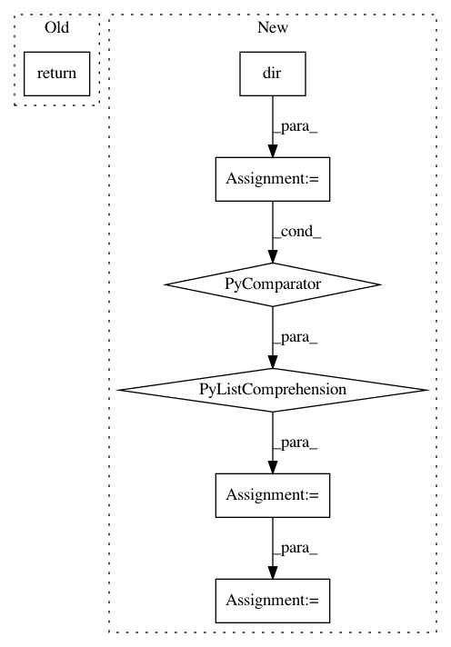

72f89ffbeaad419cad9abc7c2d6a68bc1304396c,torchsample/modules/_utils.py,,validate_loss_input,#Any#,22
Before Change
loss_fn = eval("F.%s" % loss)
except:
raise ValueError("Invalid loss string input - must match torch function exactly!")
return loss_fn
elif callable(loss):
return loss
else:
raise ValueError("Invalid metric input")
After Change
raise ValueError("Invalid metric input")
def validate_loss_input(loss):
dir_f = dir(F)
loss_fns = [d.lower() for d in dir_f]
if isinstance(loss, str):
try:
str_idx = loss_fns.index(loss.lower())
except:
raise ValueError("Invalid loss string input - must match pytorch function.")
return getattr(F, dir(F)[str_idx])
elif callable(loss):
In pattern: SUPERPATTERN
Frequency: 3
Non-data size: 7
Instances
Project Name: ncullen93/torchsample
Commit Name: 72f89ffbeaad419cad9abc7c2d6a68bc1304396c
Time: 2017-04-28
Author: ncullen@modv-vlan533.0527.apn.wlan.wireless-pennnet.upenn.edu
File Name: torchsample/modules/_utils.py
Class Name:
Method Name: validate_loss_input
Project Name: ncullen93/torchsample
Commit Name: 72f89ffbeaad419cad9abc7c2d6a68bc1304396c
Time: 2017-04-28
Author: ncullen@modv-vlan533.0527.apn.wlan.wireless-pennnet.upenn.edu
File Name: torchsample/modules/_utils.py
Class Name:
Method Name: validate_optimizer_input
Project Name: dask/dask-ml
Commit Name: e6fd1b533326c5f42fb45cac57d5e95f919a8955
Time: 2020-05-05
Author: TomAugspurger@users.noreply.github.com
File Name: dask_ml/model_selection/_normalize.py
Class Name:
Method Name: normalize_estimator